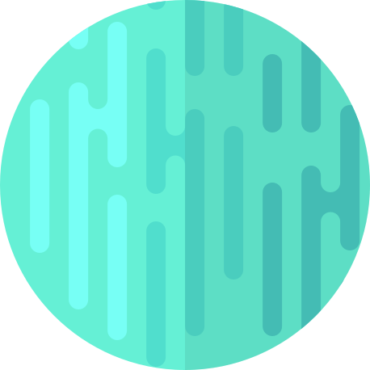

URANUS
Uranus is the seventh planet from the Sun. Its name is a reference to the Greek god of the sky, Uranus according to Greek mythology, was the great-grandfather of Ares. It has the third-largest planetary radius and fourth-largest planetary mass in the Solar System.
Source : Wikipedia 